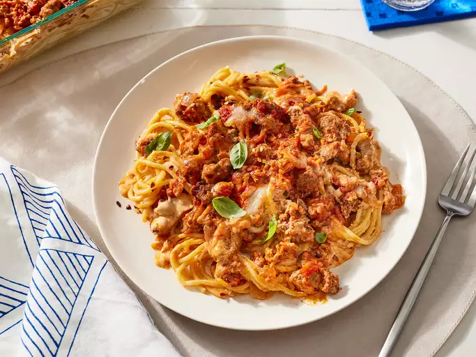

Home
spaghetti

Serve this cheesy meal with crusty garlic bread and red wine for a
comforting dinner.
Ingredients
- ¼ cup unsalted butter, divided
- 1 cup yellow onion, chopped
- 1 ¾ teaspoons kosher salt, divided
- ½ teaspoon Italian seasoning
- 4 cloves garlic, minced, divided
- 1 ½ pounds ground beef or a mixture of pork, veal, and beef
- 1 (28 ounce) jar marinara sauce
- ¼ cup chopped fresh basil, plus more for garnish
- 1 pound spaghetti
- 2 ½ cups heavy cream
- 1 ½ cups grated Parmesan cheese
- 1 ½ cups shredded mozzarella cheese
- crushed red pepper (Optional)
Steps
- Preheat oven to 375 degrees F (190 degrees C).
-
Melt 2 tbsp butter in a skillet over medium-high heat. Cook onion and
1/4 tsp salt until softened, about 4 minutes. Add Italian seasoning and
1 tsp garlic, cook for 1 minute. Add ground meat and 1 tsp salt, cook
until browned, 6-8 minutes. Stir in marinara sauce and basil, cook 3
minutes. Remove from heat and set aside.
-
Boil salted water, cook spaghetti for 12 minutes until al dente, then
drain.
-
Melt 2 tbsp butter in a saucepan over medium heat. Add 2 tsp garlic,
cook 1 minute. Stir in heavy cream, cook 8-10 minutes until thickened.
Remove from heat and whisk in Parmesan and 1/2 tsp salt.
-
Transfer pasta and cream mixture to a greased 9x13 dish, toss to
combine. Top with meat sauce, mozzarella, and crushed red pepper, if
desired.
-
Bake in preheated oven until bubbly and mozzarella is lightly browned,
about 25 minutes. Let stand 10 minutes before serving.